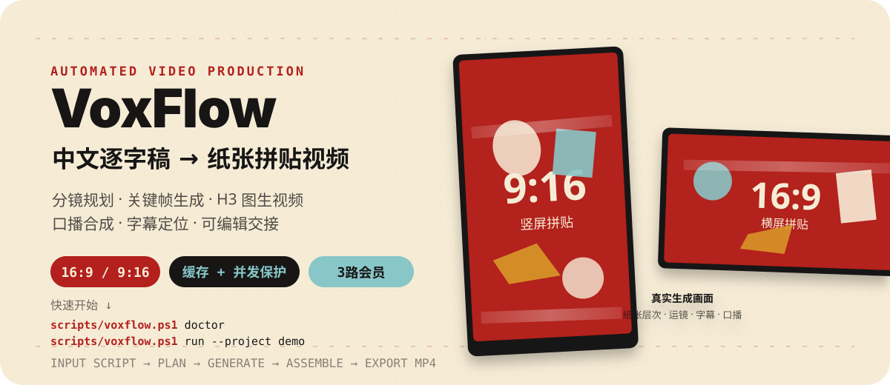
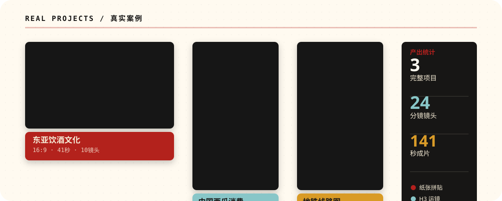
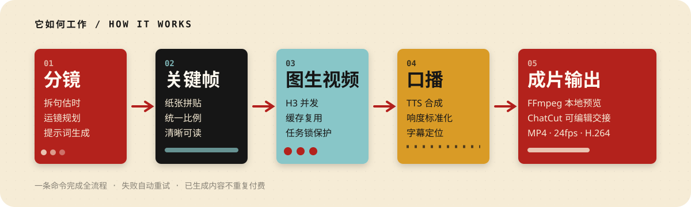
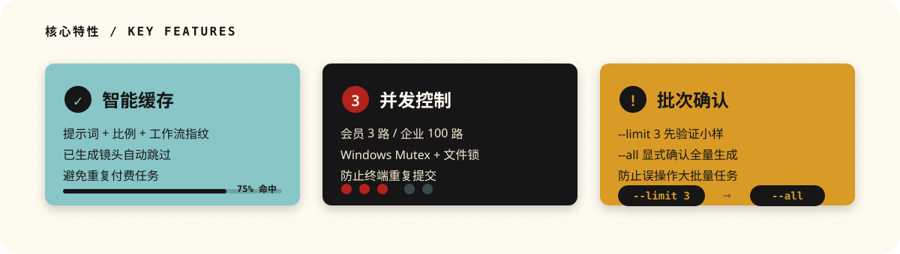

VoxFlow README 重设计预览
原版 README
行数约 280 行
首屏信息简介 + 技术流程图
案例展示文字表格
视觉资产2 个 SVG
信息顺序
- Hero（项目名 + 简介）
- 功能说明表格
- 技术流程图
- 示例输出图（较后）
- 5分钟试跑
- 画面和声音规范（较早）
- 服务与并发（较早）
- 工作方式
- ChatCut
- 适配边界
- 安全
新版 README ✨
行数约 260 行
首屏信息价值主张 + 真实成果
案例展示可视化展示墙 + 统计数据
视觉资产5 个 SVG
信息顺序
- Hero（融合真实输出预览）
- 真实案例展示墙 ⭐
- 它如何工作（简化流程）
- 5分钟快速开始
- 核心特性（成本保护）⭐
- 格式和规范（后置）
- ChatCut 交接
- 服务配置（后置）
- 高级用法
- 项目结构
- 安全和测试
- 适配边界
关键改进点
- 首屏冲击力：Hero 直接展示真实的横屏/竖屏输出效果，而非抽象功能列表
- 证据前置：真实案例展示墙紧随 Hero，配合统计数据（3项目/24镜头/141秒），立即建立信任
- 流程简化：流程图从详细技术步骤简化为5个易懂阶段，减少认知负担
- 成本透明：专门的"核心特性"模块可视化缓存、并发和批次确认机制，解决用户最大顾虑
- 技术细节后置：画面规范、服务配置等移到快速开始之后，避免吓退潜在用户
- 视觉一致性：所有 SVG 采用统一的红色(#b3201d)、米色(#f6ecd6)、青色(#88c6c8)、金色(#d99b28)品牌色系
- 纸张拼贴主题：视觉设计呼应项目生成的纸张拼贴风格，形成完整品牌叙事
新增视觉资产预览
1. Hero（重新设计）— 融合真实输出预览

2. 真实案例展示墙 — 3个项目 + 统计数据

3. 简化流程图 — 5个阶段易于理解

4. 核心特性 — 成本保护机制可视化
